Chapitre 5 Nombre de fleurs
5.1 Préparation des données
Jeu de données rdt.csv qui contient différentes mesures dont le nombre de fleurs, compté à 3 reprises en cours de culture :
fleur1: 86 j AS, 52 j AR, semaine 8 ARfleur2: 93 j AS, 59 j AR, semaine 9 ARfleur3: 100 j AS, 66 j AR, semaine 10 AR.
La question est de savoir si les différents types d’engrais induisent des quantités de fleurs significativement différentes.
##
## -- Column specification --------------------------------------------------------
## cols(
## bloc = col_double(),
## traitement = col_character(),
## engrais = col_character(),
## fleur1 = col_double(),
## fruit1 = col_double(),
## fleur2 = col_double(),
## fruit2 = col_double(),
## fleur3 = col_double(),
## fruit3 = col_double(),
## taux_fruit = col_double(),
## nfruits_re_m2 = col_double(),
## taux_nou_5 = col_double(),
## taux_nou_6 = col_double(),
## taux_nou_7 = col_double(),
## rdt_kgha = col_double(),
## rdt_tha = col_double()
## )df <- df %>%
mutate(id = 1:nrow(.), .before = 1) %>%
select(id, bloc, traitement, engrais, fleur1, fleur2, fleur3) %>%
convert_as_factor(traitement, engrais)
df$engrais <- factor(df$engrais,
levels = c("Temoin", "Fumier porcs", "Fumier poulets",
"Engrais mineral", "50% FPorcs + 50% Eng. Min.",
"50% FPoulets + 50% Eng. Min."))
write_csv(df, "tab/fleurs.csv")
df_original <- df # une copie
set.seed(123)
df %>% sample_n_by(bloc, size = 1)## # A tibble: 5 x 7
## id bloc traitement engrais fleur1 fleur2 fleur3
## <int> <dbl> <fct> <fct> <dbl> <dbl> <dbl>
## 1 3 1 T2 Fumier poulets 76 70.3 75.3
## 2 12 2 T5 50% FPoulets + 50% Eng. Min. 81.7 72.6 60
## 3 15 3 T2 Fumier poulets 44.8 45.6 36.8
## 4 20 4 T1 Fumier porcs 79 74 46
## 5 26 5 T1 Fumier porcs 61.1 58.3 38.75.2 Fleurs 1
5.2.1 Visualisation, boxplots
bxp <- ggplot(df, aes(x = engrais, y = fleur1)) +
geom_boxplot() +
theme_classic() +
xlab("Engrais") + ylab("Nombre de fleurs") +
theme(axis.text.x = element_text(angle = 45, color = "black", vjust = 1, hjust = 1))
bxp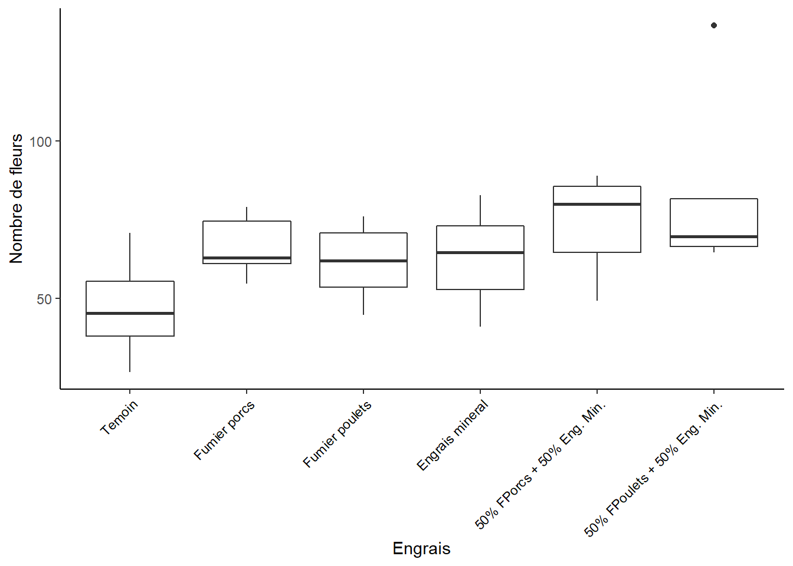
5.2.2 Identification des outliers extrêmes
df_out <- df %>%
group_by(engrais) %>%
identify_outliers(fleur1) %>%
select(id, engrais, bloc, fleur1, is.outlier, is.extreme)
df_out## # A tibble: 1 x 6
## id engrais bloc fleur1 is.outlier is.extreme
## <int> <fct> <dbl> <dbl> <lgl> <lgl>
## 1 18 50% FPoulets + 50% Eng. Min. 3 137. TRUE TRUEIl y a une observation aberrante extrême.
5.2.3 Le modèle ANOVA
## Anova Table (Type II tests)
##
## Response: fleur1
## Sum Sq Df F value Pr(>F)
## engrais 2104.9 5 2.1376 0.09702 .
## Residuals 4529.6 23
## ---
## Signif. codes: 0 '***' 0.001 '**' 0.01 '*' 0.05 '.' 0.1 ' ' 1En début de floraison, il ne serait pas encore possible d’établir des différences significatives entre les effets des traitements sur le Nombre de fleurs des plants. Mais vérifions les conditions de validité de l’ANOVA.
5.2.5 Normalité des résidus
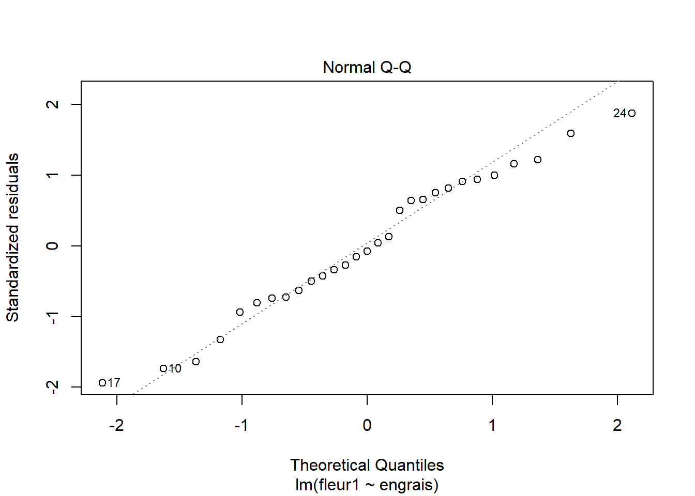
## # A tibble: 1 x 3
## variable statistic p.value
## <chr> <dbl> <dbl>
## 1 residuals(lm1) 0.975 0.6945.2.6 Homogénéité des variances
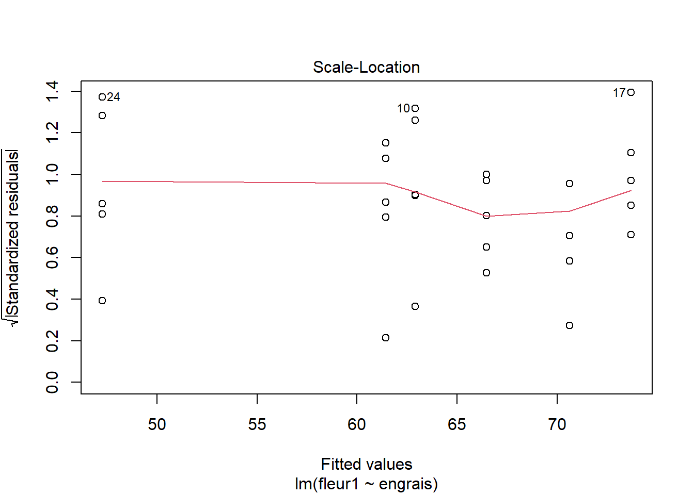
## # A tibble: 1 x 4
## df1 df2 statistic p
## <int> <int> <dbl> <dbl>
## 1 5 23 0.550 0.737On retient que la conclusion de l’ANOVA peut être considérée valide : => Pas de différence d’effet sur le Nombre de fleurs des plants à cette date.
5.2.7 Comparaisons par paires
Tests post-hoc de multiples comparaisons par paires entre les groupes (ici, les engrais).
5.2.8 Graph des comparaisons
5.2.9 Lettres pour différencier
## Temoin Fumier porcs
## "a" "a"
## Fumier poulets Engrais mineral
## "a" "a"
## 50% FPorcs + 50% Eng. Min. 50% FPoulets + 50% Eng. Min.
## "a" "a"5.2.10 Les lettres dans un dataframe pour ggplot
## engrais lettres
## Temoin Temoin a
## Fumier porcs Fumier porcs a
## Fumier poulets Fumier poulets a
## Engrais mineral Engrais mineral a
## 50% FPorcs + 50% Eng. Min. 50% FPorcs + 50% Eng. Min. a
## 50% FPoulets + 50% Eng. Min. 50% FPoulets + 50% Eng. Min. a5.2.11 Associer les moyennes et les écart-types pour le rapport
fleur1_moy <- df %>%
group_by(engrais) %>%
get_summary_stats(fleur1, type = "mean_sd") %>%
select(-variable) %>%
mutate(lettres = L$lettres)
write_csv(fleur1_moy, "tab/fleur1_moyennes.csv")
fleur1_moy## # A tibble: 6 x 5
## engrais n mean sd lettres
## <fct> <dbl> <dbl> <dbl> <chr>
## 1 Temoin 5 47.3 16.9 a
## 2 Fumier porcs 5 66.5 10.0 a
## 3 Fumier poulets 5 61.4 12.7 a
## 4 Engrais mineral 5 62.9 16.4 a
## 5 50% FPorcs + 50% Eng. Min. 5 73.7 16.5 a
## 6 50% FPoulets + 50% Eng. Min. 4 70.6 7.69 a5.2.12 Graphe avec les comparaisons
ggplot(fleur1_moy, aes(x = engrais, y = mean)) +
geom_bar(stat = "identity", color = "blue", fill = "grey", width = 0.6) +
ylim(0, 90) +
theme_bw() +
xlab("Engrais") + ylab("Nombre de fleurs") +
theme(axis.text.x = element_text(angle = 45, color = "black", vjust = 1, hjust = 1)) +
geom_text(aes(label = lettres), vjust = -0.5, size = 4)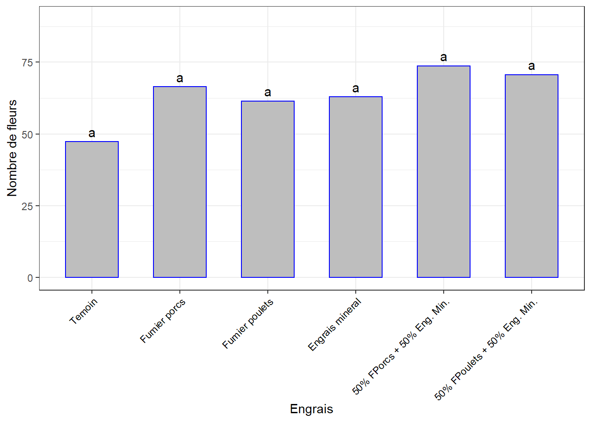
5.3 Fleurs 2
5.3.1 Visualisation, boxplots
bxp <- ggplot(df, aes(x = engrais, y = fleur2)) +
geom_boxplot() +
theme_classic() +
xlab("Engrais") + ylab("Nombre de fleurs") +
theme(axis.text.x = element_text(angle = 45, color = "black", vjust = 1, hjust = 1))
bxp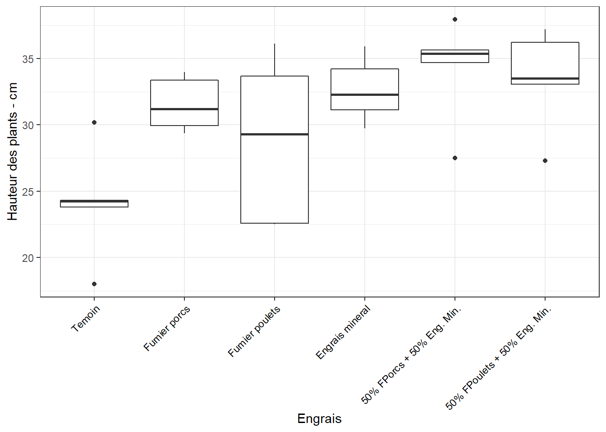
5.3.2 Identification des outliers extrêmes
df_out <- df %>%
group_by(engrais) %>%
identify_outliers(fleur2) %>%
select(id, engrais, bloc, fleur2, is.outlier, is.extreme)
df_out## # A tibble: 4 x 6
## id engrais bloc fleur2 is.outlier is.extreme
## <int> <fct> <dbl> <dbl> <lgl> <lgl>
## 1 10 Engrais mineral 2 45.6 TRUE FALSE
## 2 16 Engrais mineral 3 89.6 TRUE TRUE
## 3 17 50% FPorcs + 50% Eng. Min. 3 45.3 TRUE FALSE
## 4 18 50% FPoulets + 50% Eng. Min. 3 158. TRUE TRUEIl y a une observation aberrante extrême.
5.3.3 Le modèle ANOVA
## Anova Table (Type II tests)
##
## Response: fleur2
## Sum Sq Df F value Pr(>F)
## engrais 6731.2 5 3.5872 0.01454 *
## Residuals 9006.8 24
## ---
## Signif. codes: 0 '***' 0.001 '**' 0.01 '*' 0.05 '.' 0.1 ' ' 1À la semaine 5 après le repiquage, au moins deux types d’engrais ont des effets très significativement différents sur le Nombre de fleurs des plants. Mais vérifions les conditions de validité de l’ANOVA.
5.3.5 Normalité des résidus
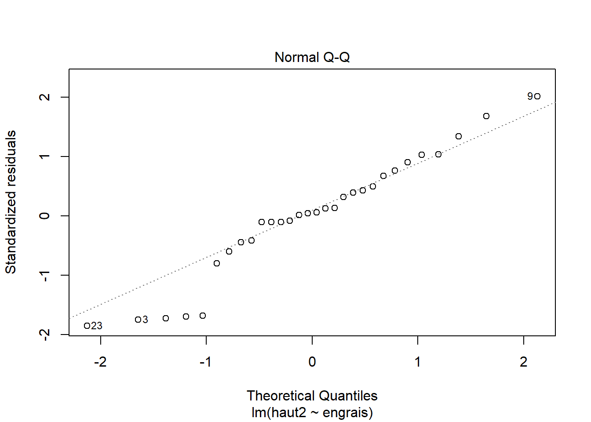
## # A tibble: 1 x 3
## variable statistic p.value
## <chr> <dbl> <dbl>
## 1 residuals(lm2) 0.902 0.009185.3.6 Homogénéité des variances
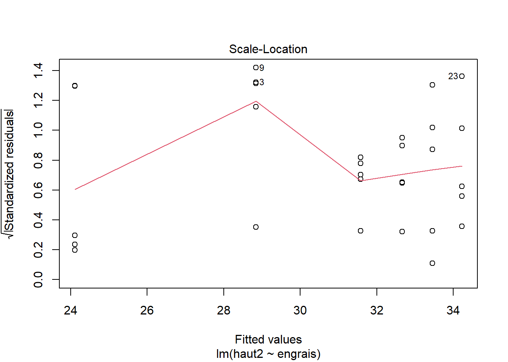
## # A tibble: 1 x 4
## df1 df2 statistic p
## <int> <int> <dbl> <dbl>
## 1 5 24 0.551 0.736On retient que la conclusion de l’ANOVA peut être considérée valide. Trouvons les engrais dont les effets sont différents.
5.3.7 Comparaisons par paires
Tests post-hoc de multiples comparaisons par paires entre les groupes (ici, les engrais) pour identifier ceux dont les effets sont différents.
##
## Simultaneous Tests for General Linear Hypotheses
##
## Multiple Comparisons of Means: Tukey Contrasts
##
##
## Fit: lm(formula = fleur2 ~ engrais, data = df)
##
## Linear Hypotheses:
## Estimate
## Fumier porcs - Temoin == 0 19.756
## Fumier poulets - Temoin == 0 12.296
## Engrais mineral - Temoin == 0 17.234
## 50% FPorcs + 50% Eng. Min. - Temoin == 0 24.788
## 50% FPoulets + 50% Eng. Min. - Temoin == 0 49.294
## Fumier poulets - Fumier porcs == 0 -7.460
## Engrais mineral - Fumier porcs == 0 -2.522
## 50% FPorcs + 50% Eng. Min. - Fumier porcs == 0 5.032
## 50% FPoulets + 50% Eng. Min. - Fumier porcs == 0 29.538
## Engrais mineral - Fumier poulets == 0 4.938
## 50% FPorcs + 50% Eng. Min. - Fumier poulets == 0 12.492
## 50% FPoulets + 50% Eng. Min. - Fumier poulets == 0 36.998
## 50% FPorcs + 50% Eng. Min. - Engrais mineral == 0 7.554
## 50% FPoulets + 50% Eng. Min. - Engrais mineral == 0 32.060
## 50% FPoulets + 50% Eng. Min. - 50% FPorcs + 50% Eng. Min. == 0 24.506
## Std. Error
## Fumier porcs - Temoin == 0 12.252
## Fumier poulets - Temoin == 0 12.252
## Engrais mineral - Temoin == 0 12.252
## 50% FPorcs + 50% Eng. Min. - Temoin == 0 12.252
## 50% FPoulets + 50% Eng. Min. - Temoin == 0 12.252
## Fumier poulets - Fumier porcs == 0 12.252
## Engrais mineral - Fumier porcs == 0 12.252
## 50% FPorcs + 50% Eng. Min. - Fumier porcs == 0 12.252
## 50% FPoulets + 50% Eng. Min. - Fumier porcs == 0 12.252
## Engrais mineral - Fumier poulets == 0 12.252
## 50% FPorcs + 50% Eng. Min. - Fumier poulets == 0 12.252
## 50% FPoulets + 50% Eng. Min. - Fumier poulets == 0 12.252
## 50% FPorcs + 50% Eng. Min. - Engrais mineral == 0 12.252
## 50% FPoulets + 50% Eng. Min. - Engrais mineral == 0 12.252
## 50% FPoulets + 50% Eng. Min. - 50% FPorcs + 50% Eng. Min. == 0 12.252
## t value Pr(>|t|)
## Fumier porcs - Temoin == 0 1.612 0.59858
## Fumier poulets - Temoin == 0 1.004 0.91223
## Engrais mineral - Temoin == 0 1.407 0.72281
## 50% FPorcs + 50% Eng. Min. - Temoin == 0 2.023 0.35896
## 50% FPoulets + 50% Eng. Min. - Temoin == 0 4.023 0.00578
## Fumier poulets - Fumier porcs == 0 -0.609 0.98934
## Engrais mineral - Fumier porcs == 0 -0.206 0.99994
## 50% FPorcs + 50% Eng. Min. - Fumier porcs == 0 0.411 0.99830
## 50% FPoulets + 50% Eng. Min. - Fumier porcs == 0 2.411 0.19193
## Engrais mineral - Fumier poulets == 0 0.403 0.99845
## 50% FPorcs + 50% Eng. Min. - Fumier poulets == 0 1.020 0.90676
## 50% FPoulets + 50% Eng. Min. - Fumier poulets == 0 3.020 0.05840
## 50% FPorcs + 50% Eng. Min. - Engrais mineral == 0 0.617 0.98872
## 50% FPoulets + 50% Eng. Min. - Engrais mineral == 0 2.617 0.13164
## 50% FPoulets + 50% Eng. Min. - 50% FPorcs + 50% Eng. Min. == 0 2.000 0.37135
##
## Fumier porcs - Temoin == 0
## Fumier poulets - Temoin == 0
## Engrais mineral - Temoin == 0
## 50% FPorcs + 50% Eng. Min. - Temoin == 0
## 50% FPoulets + 50% Eng. Min. - Temoin == 0 **
## Fumier poulets - Fumier porcs == 0
## Engrais mineral - Fumier porcs == 0
## 50% FPorcs + 50% Eng. Min. - Fumier porcs == 0
## 50% FPoulets + 50% Eng. Min. - Fumier porcs == 0
## Engrais mineral - Fumier poulets == 0
## 50% FPorcs + 50% Eng. Min. - Fumier poulets == 0
## 50% FPoulets + 50% Eng. Min. - Fumier poulets == 0 .
## 50% FPorcs + 50% Eng. Min. - Engrais mineral == 0
## 50% FPoulets + 50% Eng. Min. - Engrais mineral == 0
## 50% FPoulets + 50% Eng. Min. - 50% FPorcs + 50% Eng. Min. == 0
## ---
## Signif. codes: 0 '***' 0.001 '**' 0.01 '*' 0.05 '.' 0.1 ' ' 1
## (Adjusted p values reported -- single-step method)5.3.9 Lettres pour différencier
## Temoin Fumier porcs
## "a" "ab"
## Fumier poulets Engrais mineral
## "ab" "ab"
## 50% FPorcs + 50% Eng. Min. 50% FPoulets + 50% Eng. Min.
## "ab" "b"5.3.10 Les lettres dans un dataframe pour ggplot
## engrais lettres
## Temoin Temoin a
## Fumier porcs Fumier porcs ab
## Fumier poulets Fumier poulets ab
## Engrais mineral Engrais mineral ab
## 50% FPorcs + 50% Eng. Min. 50% FPorcs + 50% Eng. Min. ab
## 50% FPoulets + 50% Eng. Min. 50% FPoulets + 50% Eng. Min. b5.3.11 Associer les moyennes et les écart-types pour le rapport
fleur2_moy <- df %>%
group_by(engrais) %>%
get_summary_stats(fleur2, type = "mean_sd") %>%
select(-variable) %>%
mutate(lettres = L$lettres)
write_csv(fleur2_moy, "tab/fleur2_moyennes.csv")
fleur2_moy## # A tibble: 6 x 5
## engrais n mean sd lettres
## <fct> <dbl> <dbl> <dbl> <chr>
## 1 Temoin 5 46.5 16.9 a
## 2 Fumier porcs 5 66.3 9.70 ab
## 3 Fumier poulets 5 58.8 10.8 ab
## 4 Engrais mineral 5 63.8 16.1 ab
## 5 50% FPorcs + 50% Eng. Min. 5 71.3 15.3 ab
## 6 50% FPoulets + 50% Eng. Min. 5 95.8 35.5 b5.3.12 Graphe avec les comparaisons
ggplot(fleur2_moy, aes(x = engrais, y = mean)) +
geom_bar(stat = "identity", color = "blue", fill = "grey", width = 0.6) +
ylim(0, 90) +
theme_bw() +
xlab("Engrais") + ylab("Nombre de fleurs") +
theme(axis.text.x = element_text(angle = 45, color = "black", vjust = 1, hjust = 1)) +
geom_text(aes(label = lettres), vjust = -0.5, size = 4)## Warning: Removed 1 rows containing missing values (position_stack).## Warning: Removed 1 rows containing missing values (geom_text).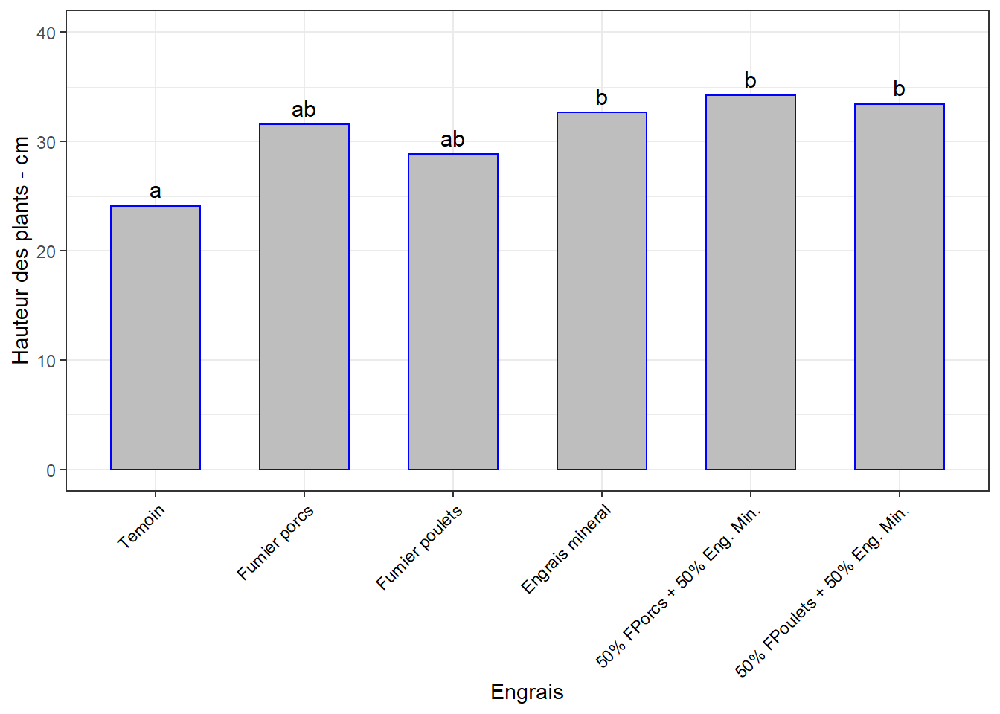
5.4 Fleurs 3
5.4.1 Visualisation, boxplots
bxp <- ggplot(df, aes(x = engrais, y = fleur3)) +
geom_boxplot() +
theme_classic() +
xlab("Engrais") + ylab("Nombre de fleurs") +
theme(axis.text.x = element_text(angle = 45, color = "black", vjust = 1, hjust = 1))
bxp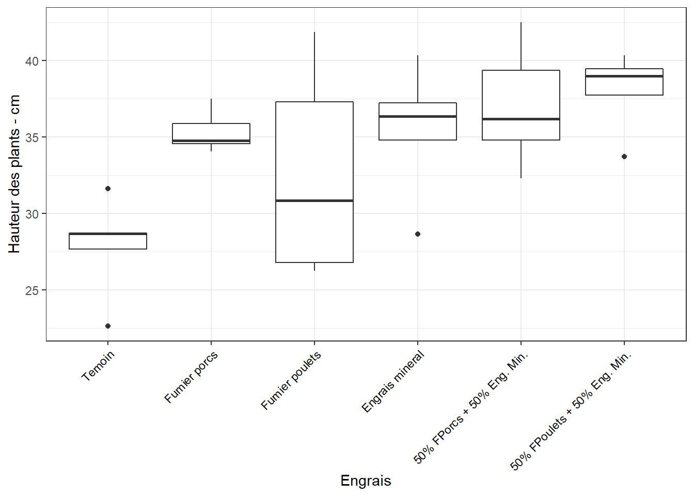
5.4.2 Identification des outliers extrêmes
df_out <- df %>%
group_by(engrais) %>%
identify_outliers(fleur3) %>%
select(id, engrais, bloc, fleur3, is.outlier, is.extreme)
df_out## # A tibble: 5 x 6
## id engrais bloc fleur3 is.outlier is.extreme
## <int> <fct> <dbl> <dbl> <lgl> <lgl>
## 1 1 Temoin 1 24 TRUE FALSE
## 2 25 Temoin 5 83.3 TRUE TRUE
## 3 17 50% FPorcs + 50% Eng. Min. 3 32 TRUE FALSE
## 4 23 50% FPorcs + 50% Eng. Min. 4 97.3 TRUE FALSE
## 5 18 50% FPoulets + 50% Eng. Min. 3 101. TRUE TRUEIl y a une observation aberrante extrême.
5.4.3 Le modèle ANOVA
## Anova Table (Type II tests)
##
## Response: fleur3
## Sum Sq Df F value Pr(>F)
## engrais 1726.6 5 0.8995 0.4974
## Residuals 9213.8 24Il n’y aurait pas d’effets significativement différents sur le Nombre de fleurs des plants à cette date. Mais vérifions les conditions de validité de l’ANOVA.
5.4.5 Normalité des résidus
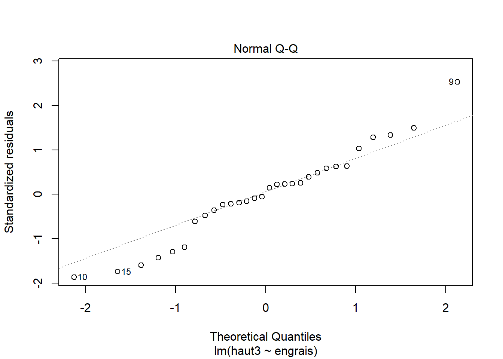
## # A tibble: 1 x 3
## variable statistic p.value
## <chr> <dbl> <dbl>
## 1 residuals(lm3) 0.943 0.1105.4.6 Homogénéité des variances
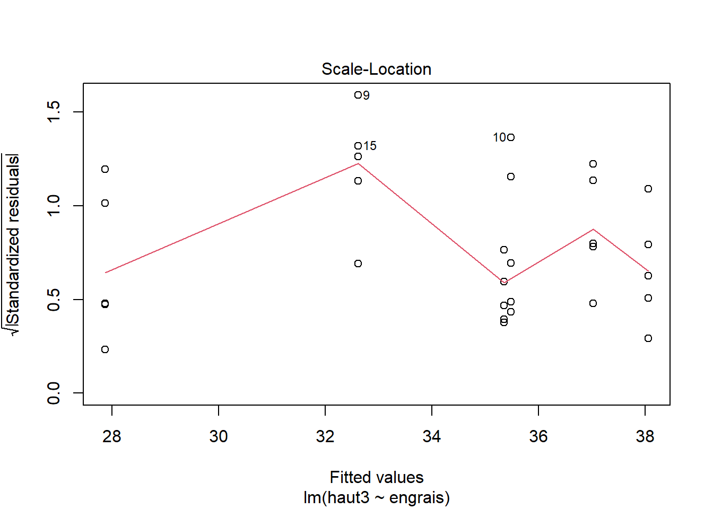
## # A tibble: 1 x 4
## df1 df2 statistic p
## <int> <int> <dbl> <dbl>
## 1 5 24 0.415 0.834On retient que la conclusion de l’ANOVA peut être considérée valide. Affichons quand même les comparaisons par paires.
5.4.7 Comparaisons par paires
Tests post-hoc de multiples comparaisons par paires entre les groupes (ici, les engrais).
5.4.8 Graph des comparaisons
5.4.9 Lettres pour différencier
## Temoin Fumier porcs
## "a" "a"
## Fumier poulets Engrais mineral
## "a" "a"
## 50% FPorcs + 50% Eng. Min. 50% FPoulets + 50% Eng. Min.
## "a" "a"5.4.10 Les lettres dans un dataframe pour ggplot
## engrais lettres
## Temoin Temoin a
## Fumier porcs Fumier porcs a
## Fumier poulets Fumier poulets a
## Engrais mineral Engrais mineral a
## 50% FPorcs + 50% Eng. Min. 50% FPorcs + 50% Eng. Min. a
## 50% FPoulets + 50% Eng. Min. 50% FPoulets + 50% Eng. Min. a5.4.11 Associer les moyennes et les écart-types pour le rapport
fleur3_moy <- df %>%
group_by(engrais) %>%
get_summary_stats(fleur3, type = "mean_sd") %>%
select(-variable) %>%
mutate(lettres = L$lettres)
write_csv(fleur3_moy, "tab/fleur3_moyennes.csv")
fleur3_moy## # A tibble: 6 x 5
## engrais n mean sd lettres
## <fct> <dbl> <dbl> <dbl> <chr>
## 1 Temoin 5 47.6 21.9 a
## 2 Fumier porcs 5 50.1 8.89 a
## 3 Fumier poulets 5 59.7 16.7 a
## 4 Engrais mineral 5 63.4 24.0 a
## 5 50% FPorcs + 50% Eng. Min. 5 63.6 23.7 a
## 6 50% FPoulets + 50% Eng. Min. 5 68.8 18.2 a5.4.12 Graphe avec les comparaisons
ggplot(fleur3_moy, aes(x = engrais, y = mean)) +
geom_bar(stat = "identity", color = "blue", fill = "grey", width = 0.6) +
ylim(0, 75) +
theme_bw() +
xlab("Engrais") + ylab("Nombre de fleurs") +
theme(axis.text.x = element_text(angle = 45, color = "black", vjust = 1, hjust = 1)) +
geom_text(aes(label = lettres), vjust = -0.5, size = 4)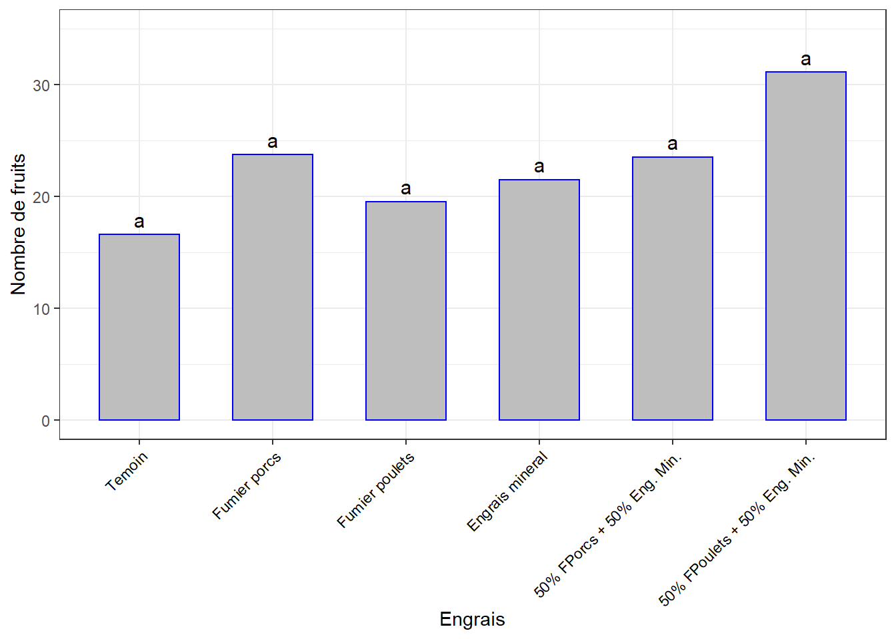